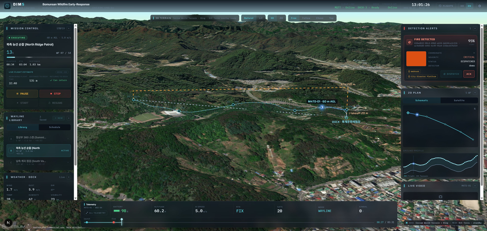
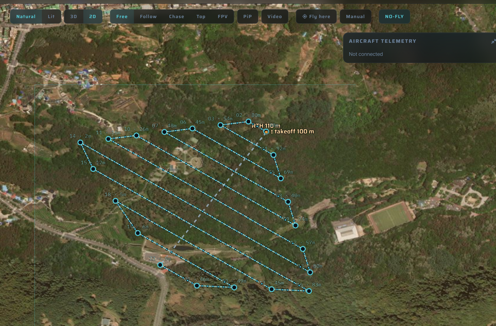
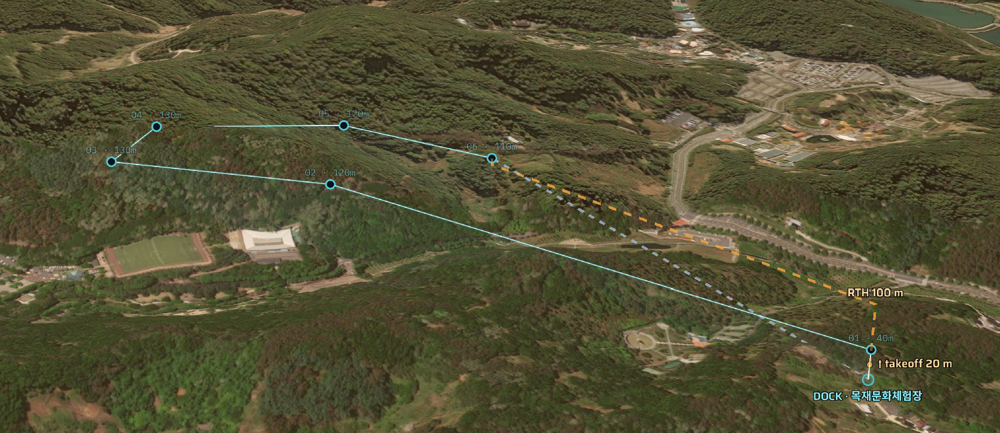
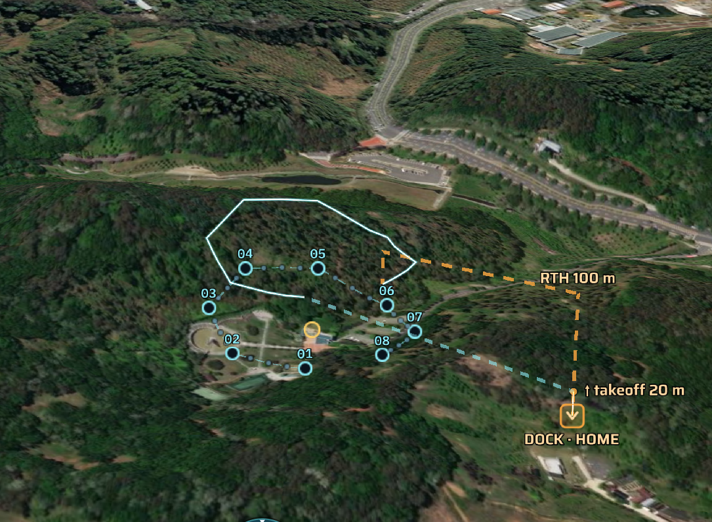
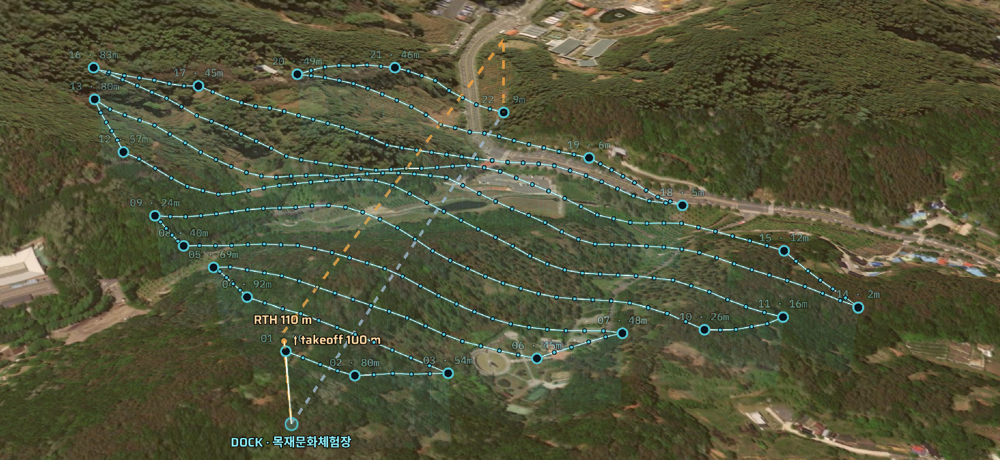
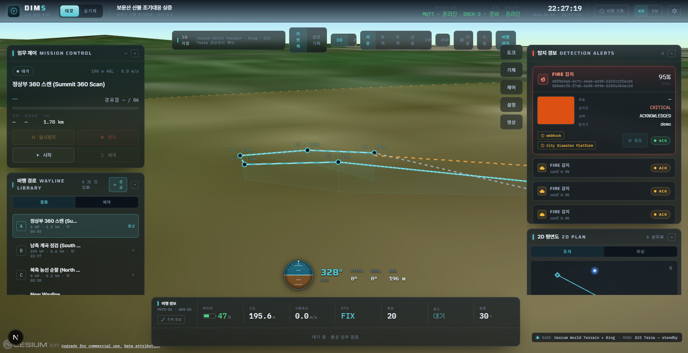
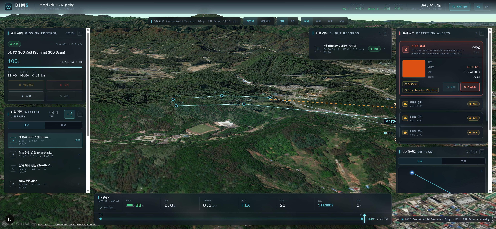
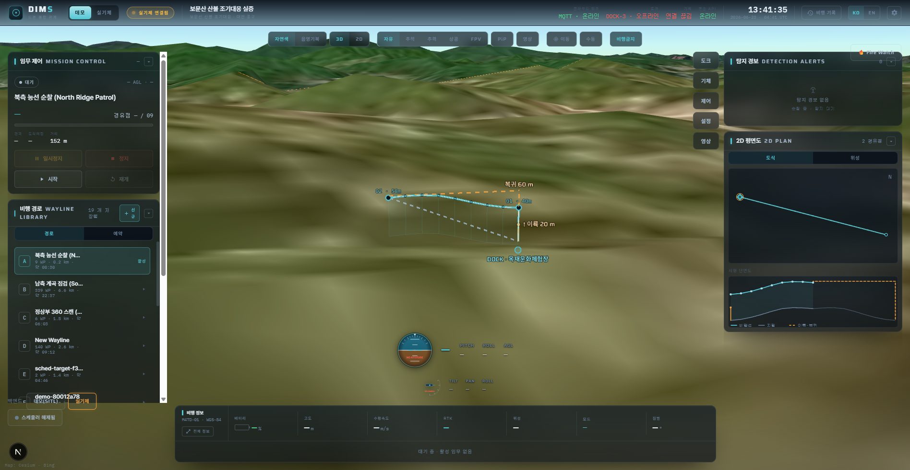
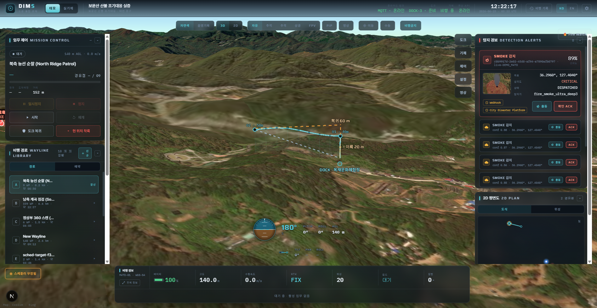

DIMS Frontend Deep-Dive
The frontend is the operator console — the single screen a person uses to watch and command a mission. It’s an aerospace-style “mission control” built in the browser: a live 3D world with a glass instrument overlay. This chapter tours what’s on that screen and how it’s built.
What it’s built from
The console is a Next.js / React app. The thing that makes it special is CesiumJS — an engine that renders an accurate 3D globe and real terrain in the browser. DIMS drops a geo-accurate 3D digital twin of the site into the page and flies the drone inside it, live.
The visual language is deliberate and locked: an immersive, full-bleed terrain twin with a translucent “glass” HUD floating on top — the same look this handbook borrows. It reads as a real cockpit, not a generic dashboard.

How the screen is organised
Everything overlays one live 3D scene. The main pieces:
The 3D twin (the stage)
A real-terrain globe centred on the mission site. From the top bar you can switch basemaps (Natural / Lit) and camera modes — Free orbit, Follow, Chase, Top (2D), FPV — plus toggle the picture-in-picture video, “Fly here”, and the no-fly overlay.

The flight instruments (PFD)
A cockpit-style Primary Flight Display shows attitude, heading, altitude and speed — the same instruments a pilot reads — driven live by the drone’s telemetry.
The live video + AI (FPV)
A picture-in-picture panel shows the drone’s first-person camera feed, with the YOLO detection boxes drawn directly on it (ch 15). When the AI detects something, the gimbal can auto-aim to keep the target centred.

Commanding a mission — the planner
Operators don’t just watch; they plan. The mission editor is multi-mode: you can place waypoints manually or auto-generate common patterns — a lawnmower (back-and-forth survey), an orbit around a point, a go-to, or a patrol route. A “ground-profile” strip under the map shows the terrain beneath the route so you can keep a safe above-ground clearance.



The planner has tabs for the route, mission settings, a flight-time/battery estimate, a safety check (does the path clear the terrain?), and a schedule. Each is a focused panel rather than one overwhelming form.
Live control (DRC teleop)
Beyond pre-planned routes, an operator can take live manual control through DIMS using DRC — “fly this direction”, “aim the gimbal there”, a fly-to click on the map — sent over the network to the drone.

Records & replay
Past flights are saved. The console lists previous missions and can replay one — re-flying the recorded telemetry over the twin so you can review exactly what happened, like a flight-data recorder.

Demo vs real, safely
A backend switcher flips the whole console between the simulator and a real Dock 3 (ch 13). And because a real drone must never launch by accident, the scheduler has an “armed” master gate that defaults to OFF — a deliberate safety guard you’ll see in the UI.


How the frontend gets its data
The console talks to the operator API (ch 13). It reads state with REST calls (e.g. GET /telemetry, GET /alerts) and receives live updates as they happen — new telemetry, new alerts — so the map and instruments move in real time. Commands like “start mission” or “fly to here” are sent as REST calls back to the API.
“The DIMS frontend is a Next.js/React operator console built around a CesiumJS 3D terrain twin with a glass HUD. It shows a cockpit PFD, the live FPV feed with AI boxes, and a multi-mode mission planner (manual/orbit/lawnmower) with terrain-safety checks. Operators can teleop live via DRC, replay past flights, and flip between simulator and real dock — with an armed safety gate. It reads telemetry and alerts from the operator API and renders them live.”